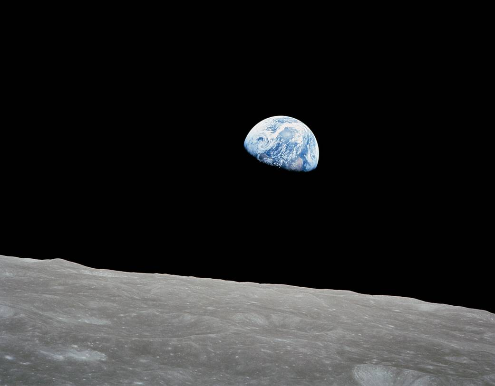
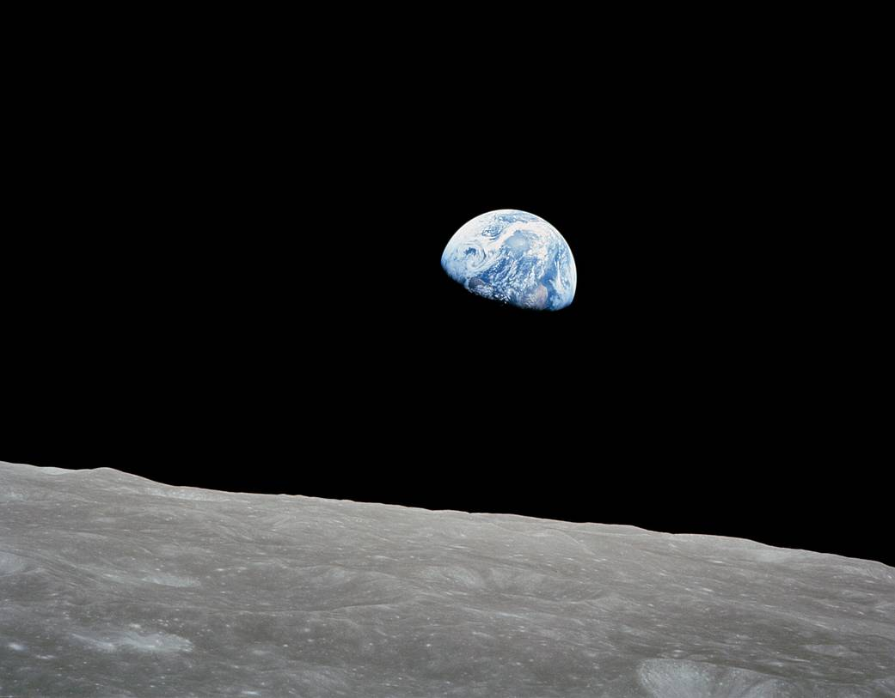

Top 10 Space Agencies
The National Aeronautics and Space Administration (NASA ) is an independent agency of the U.S. federal government responsible for the civil space program, aeronautics research, and space research. NASA was established in 1958, succeeding the National Advisory Committee for Aeronautics (NACA), to give the U.S. space development effort a distinctly civilian orientation, emphasizing peaceful applications in space science. NASA has since led most American space exploration, including Project Mercury, Project Gemini, the 1968-1972 Apollo Moon landing missions, the Skylab space station, and the Space Shuttle. NASA supports the International Space Station and oversees the development of the Orion spacecraft and the Space Launch System for the crewed lunar Artemis program, Commercial Crew spacecraft, and the planned Lunar Gateway space station. The agency is also responsible for the Launch Services Program, which provides oversight of launch operations and countdown ... management for uncrewed NASA launches. NASA's science is focused on better understanding Earth through the Earth Observing System;[8] advancing heliophysics through the efforts of the Science Mission Directorate's Heliophysics Research Program;[9] exploring bodies throughout the Solar System with advanced robotic spacecraft such as New Horizons and planetary rovers such as Perseverance; and researching astrophysics topics, such as the Big Bang, through the James Webb Space Telescope, and the Great Observatories and associated programs.
Click Here For More Information
The Indian Space Research Organisation (ISRO) is the national space agency of India, headquartered in Bengaluru. It operates under the Department of Space (DOS) which is directly overseen by the Prime Minister of India, while the Chairman of ISRO acts as the executive of DOS as well. ISRO is India's primary agency for performing tasks related to space-based applications, space exploration and the development of related technologies. It is one of six government space agencies in the world which possess full launch capabilities, deploy cryogenic engines, launch extraterrestrial missions and operate large fleets of artificial satellites. The Indian National Committee for Space Research (INCOSPAR) was established by Jawaharlal Nehru under the Department of Atomic Energy (DAE) in 1962, on the urging of scientist Vikram Sarabhai, recognising the need in space research. INCOSPAR grew and became ISRO in 1969, within DAE. In 1972, the government of India set up a Space Commission and DOS, bringing ISRO under it. The establishment of ISRO thus institutionalised space research activities in India. It since then has been managed by DOS, which governs various other institutions in India in the domain of astronomy and space technology. ... ISRO built India's first satellite, Aryabhata, which was launched by the Soviet Union in 1975. In 1980, ISRO launched satellite RS-1 onboard its own SLV-3, making India the seventh country to be capable of undertaking orbital launches. SLV-3 was followed by ASLV, which was subsequently succeeded by development of many medium-lift launch vehicles, rocket engines, satellite systems and networks enabling the agency to launch hundreds of domestic and foreign satellites and various deep space missions for space exploration. ISRO has the world's largest constellation of remote-sensing satellites and operates the GAGAN and NAVIC satellite navigation systems. It has sent two missions to the Moon and one to Mars.
Click Here For More Information
3. China National Space Administration (CNSA)
CNSA is one of the most popular and most successful space agencies globally. This administration was established in 1993, thirty-six years after establishing NASA. From 1993 till today, CNSA has done an excellent job exploring space. CNSA has sent many spacecraft and satellites into space. There are about 4500 satellites in space, and only CNSA has sent 412 out of 4500 satellites in space. ... China sent its space station named Tiangong-1 in space in 2011. China has sent 11 astronauts to space. The China National Space Administration successfully made the first soft landing on the moon in 2014, using Change 3 as its first robotic lunar lander and rover. CNSA has also made many plans for the future. As per a report, in 2029-2030, China is also preparing to send such a spacecraft in space that will capture Jupiter and Saturn images closely and send some more useful information. The annual budget of CNSA is $8.9 billion.
Click Here For More Information
The State Space Corporation "Roscosmos" (Russian: Государственная корпорация по космической деятельности «Роскосмос»), commonly known simply as Roscosmos, is a state corporation of the Russian Federation responsible for space flights, cosmonautics programs, and aerospace research. Originating from the Soviet space program founded in the 1950s, Roscosmos emerged following the dissolution of the Soviet Union in 1991. It initially began as the Russian Space Agency, which was established on 25 February 1992 and restructured in 1999 and 2004, as the Russian Aviation and Space Agency and the Federal Space Agency (Roscosmos), respectively. In 2015, the Federal Space Agency (Roscosmos) was merged with the United Rocket and Space Corporation, a government corporation, to re-nationalize the Russian space industry, leading to Roscosmos in its current form. ... Roscosmos is headquartered in Moscow, with its main Mission Control Center in the nearby city of Korolyov, and the Yuri Gagarin Cosmonaut Training Center located in Star City in Moscow Oblast. Its launch facilities include Baikonur Cosmodrome in Kazakhstan, the world's first and largest spaceport, and Vostochny Cosmodrome, which is being built in the Russian Far East in Amur Oblast. Its director since July 2022 is Yury Borisov. As the main successor to the Soviet space program, Roscosmos' legacy includes the world's first satellite, first human spaceflight, and first space station (Salyut). Its current activities include the International Space Station, wherein it is a major partner. On 22 February 2019, Roscosmos announced the construction of its new headquarters in Moscow, the National Space Centre. Its Astronaut Corps is the first in the world's history. The Soviet space program did not have central executive agencies. Instead, its organizational architecture was multi-centered; it was the design bureaus and the council of designers that had the most say, not the political leadership. The creation of a central agency after the separation of Russia from the Soviet Union was therefore a new development. The Russian Space Agency was formed on 25 February 1992, by a decree of President Yeltsin. Yuri Koptev, who had previously worked with designing Mars landers at NPO Lavochkin, became the agency's first director.
Click Here For More Information

This space agency is a multi-government organization. It was founded in 1975 by a group of 20 European countries. The annual budget of this space agency is $7.43 billion. ESA's headquarter is in Paris. ESA has done many missions or projects, such as the Venus mission, Rosetta mission, Mars mission, Corot space telescope mission, etc. One famous project of ESA is Venus Express. ESA had made such a spacecraft that could go very close to the other planet in our solar system, and the sun's rays ... cannot affect it. Venus Express is a spacecraft that went very close to Venus and gave a lot of information. This spacecraft was launched in November 2005. But in 2014, Europe lost contact with this satellite. European Space Agency will launch a very interesting mission, and its name will be Ariel Space Mission. The main purpose of this mission is to get information about all the exoplanets. At present, ESA plans to create the world's first space junk collector. The main aim of ESA is to bring the space debris gathered in space to Earth. The name of this mission is ClearSpace-1.
Click Here For More Information
The Japanese government's national space agency is known as JAXA. It was established in 2003, and its headquarters is in Tokyo. By the way, Japan's interest in space started only after World War 2. But for many years, Japan had no space agency; then, in 1969, Japan signed the Outer Space Treaty, and on October 1, 2003, the JAXA was formed when three organizations merged. Japan's Institute of Space and Astronautical Science (ISAS), the National Aerospace Laboratory of Japan (NAL), and the National Space Development Agency of Japan (NSDAJ) were the first, second, and third organizations, respectively. In 1969, Japan failed in its first satellite mission, but in 1970 ... Japan launched its first satellite. JAXA became popular when it launched Hayabusa Mission. Hayabusa 1 was launched in the year 2003. This mission aimed to know about Asteroid Ryugu, located 300 million km away from Earth. But Hayabusa 1 was not successful, and for this reason, JAXA launched Hayabusa 2 in 2014. JAXA is currently working on the Human Space Program and reusable launch vehicles and working to send a human-robot to the Moon. The annual budget of JAXA is $2.6 billion.
Click Here For More Information
![]()
SpaceX is the first private space research company in the world. Elon Musk, a well-known businessman, founded it in 2002. The main objective of SpaceX is to reduce the cost of going to space. The headquarters of this space agency is in Hawthorne, California. NASA is considered the number one space agency globally, But NASA has not been able to make such a rocket to date, which comes back to the earth from space and can be re-used. But a private space company founded in 2002 did this. Apart from this, SpaceX is also working on its Starship rocket mission, whose configuration is similar to NASA's best rocket ... space launch system. SpaceX is the only space company that makes private rockets. SpaceX also made a new world record. SpaceX has set the record for sending 143 satellites in space simultaneously. This work has been done with a rocket named Falcon 9. All these satellites were sent to space from Florida, America. Most of these satellites are commercial, and some are government satellites. Earlier, this record was made by ISRO of India.
Click Here For More Information
The Space Agency of France was established in the year 1961. Its headquarters are in Paris. This space agency is also known as CNES. Centre national d'études spatiales is the full form of CNES, which is in the french language. After Russia's Soviet space program and America's National Aeronautics and Space Administration, CNES is the world's third-oldest space agency. CNES offers the best aerospace training in the world. The French Ministry of Defense and Research oversees the CNES. The annual budget of CNES is $2.43 billion. The French space agency ... collaborates with Germany and other governments space agencies to develop a methane-powered reusable launch vehicle. The main goal of this project is to drastically reduce the cost and time it takes to refurbish reusable rockets. In collaboration with the Indian Space Agency (ISRO), the French Space Agency launched the Megha-Tropiques satellite. The main aim of this mission is to study the tropical atmosphere's water cycle in the context of climate change. In October 2011, Megha-Tropiques was successfully launched into orbit with the help of a PSLV rocket. France's space agency will work on some missions in collaboration with India's space agency in the future. This mission or project starts in 2025.
Click Here For More Information
This space agency is considered one of the oldest agencies in the world. This space agency was founded in the year 1969. Space, Transportation, Aeronautics, Security, Digitalization, and Energy are all areas in which the German Aerospace Center works. The headquarters of this space agency is in Cologne. DLR also serves as Germany's space agency, so the German Aerospace Center conducts missions, plans, and implements the space program on behalf of the German government. Low carbon dioxide power generation, solar thermal power generation technologies, ultra-efficient, and renewable energy sources are areas where this space agency is currently working. In the future, the German Aerospace Center will conduct research in satellite development, propulsion technology, and space mission concepts. Some major projects of this space agency include the Mars Express mission, global navigation satellite system Galileo, and Shuttle Radar Topography Mission. The annual budget of the German Aerospace Center is $2.55 billion. DLR has approximately 10.000 employees at 30 locations in Germany.[when?] Institutes and facilities are spread over 13 sites, as well as offices in Brussels, Paris and Washington, D.C. DLR has a budget of €1 billion to cover its own research, development and operations. Approximately 49% of this sum comes from competitively allocated third-party funds (German: Drittmittel). In addition to this, DLR administers around €860 million in German funds for the European Space Agency (ESA). In its capacity as project management agency, it manages €1.279 billion in research on behalf of German federal ministries. DLR is a full member of the Consultative Committee for Space Data Systems and a member of the Helmholtz Association of German Research Centres. ... In the context of DLR's initiatives to promote young research talent, ten DLR School Labs were set up at Technische Universität Darmstadt, Technische Universität Hamburg-Harburg, RWTH Aachen, Technische Universität Dresden and in Berlin-Adlershof, Braunschweig, Bremen, Cologne-Porz, Dortmund, Göttingen, Lampoldshausen/Stuttgart, Neustrelitz, and Oberpfaffenhofen over the past years.[3] In the DLR School Labs, pupils can become acquainted with the practical aspects of natural and engineering sciences by conducting interesting experiments.
Click Here For More Information
The Italian Space Agency (Italian: Agenzia Spaziale Italiana; ASI) is a government agency established in 1988 to fund, regulate and coordinate space exploration activities in Italy. The agency cooperates with numerous national and international entities who are active in aerospace research and technology. Nationally, ASI is responsible for both drafting the National Aerospace Plan and ensuring it is carried out. To do this the agency operates as the owner/coordinator of a number of Italian space research agencies and assets such as CIRA as well as organising the calls and opportunities process for Italian industrial contractors on spaceflight projects. Internationally, the ASI provides Italy's delegation to the Council of the European Space Agency and to its subordinate bodies as well as representing the country's interests in foreign collaborations. ... ASI's main headquarters are located in Rome, Italy, and the agency also has direct control over two operational centres: the Centre for Space Geodesy (CGS) located in Matera in Italy, and its own spaceport, the Broglio Space Centre (formerly the San Marco Equatorial Range) on the coastal sublittoral of Kenya, currently used only as a communications ground station. One further balloon launch base located in Trapani was permanently closed in 2010. In 2020, ASI's annual revenues budget was approximately €2.0 billion and it directly employed around 200 workers. Activities started officially in 1988 but the agency drew extensively on the work of earlier national organisations as well as the consolidated experience of the many Italian scientists that had been investigating space and astronautics since the end of the 19th century. Some of the most outstanding names in Italian space exploration
Click Here For More information
 
